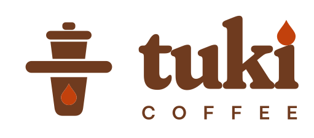
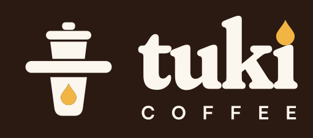
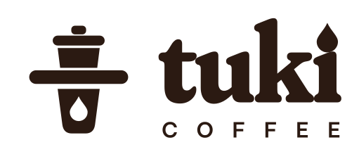
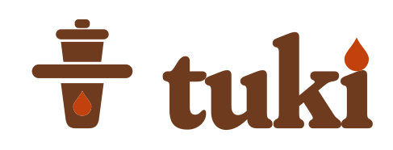
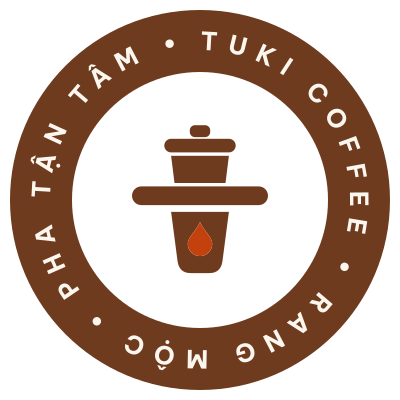

Ấm áp
Như người quen pha cho mình ly cà phê.
Không sến, không khách sáo.
Tuki Coffee · Nhận diện thương hiệu
Logo “Phin chữ T”: chiếc phin đặt trên ly tạo thành chữ T, cạnh chữ “tuki” có giọt cà phê thay dấu chấm chữ i. Dựng trên design system của Tuki: bảng màu rang đậm, cam Tuki, caramel và bộ chữ Fraunces, Be Vietnam Pro.
Đã chốt · 26/09/2026

Nền tảng thương hiệu
“Một góc nhỏ để chậm lại.”
Như người quen pha cho mình ly cà phê.
Không sến, không khách sáo.
Nói thật về hạt, cách rang, cách pha.
Không thô, không “vintage cho có”.
Chi tiết nhỏ được làm kỹ, mỗi ly một lần pha.
Không cầu kỳ, không dạy đời.
Chút tinh nghịch: chữ nghiêng, màu caramel.
Không ồn ào, không chạy theo trend.
Hệ thống logo
Cam Tuki trong logo chỉ dành cho giọt cà phê. Chữ và biểu tượng luôn một màu: rang đậm trên nền sáng, kem trên nền espresso, espresso khi in một màu.




Vùng gạch chéo: khoảng trống tối thiểu, bằng chiều cao giọt cà phê.
Ứng dụng
Phác thảo vị trí logo trên các điểm chạm ưu tiên, chưa phải mockup in ấn.
Giọng nói
Xưng “chúng tôi” hoặc “Tuki”, gọi khách là “bạn”. Câu ngắn, nói về ly cà phê thật.
| Nên viết | Tránh viết |
|---|---|
| Hạt rang tuần này là Cầu Đất, ngọt hậu, ít chua. | Trải nghiệm hương vị đỉnh cao chưa từng có! |
| Mỗi ly một lần pha, nên bạn chờ thêm chút nhé. | Xin quý khách vui lòng kiên nhẫn chờ đợi. |
| Hôm nay Tuki mở đến 22:00. | Ghé ngay kẻo lỡ!!! |
Quá trình chọn logo
Cả ba chung một chi tiết: chấm của chữ i là giọt cà phê màu cam Tuki. Hướng B được chọn vì có biểu tượng riêng, vẫn rõ ở cỡ nhỏ. A và C lưu trong logo/concepts/ để tham khảo.
Chỉ có chữ. Cá tính nằm ở nét mềm của Fraunces và giọt cà phê trên chữ i.
Phin đặt trên ly: đĩa phin là nét ngang, ly là thân dọc, thành chữ T ẩn. Giọt cà phê trong ly lặp lại giọt trên chữ i.
Chữ nghiêng trên mảng blob caramel, xoay nhẹ như sticker dán lên ly.